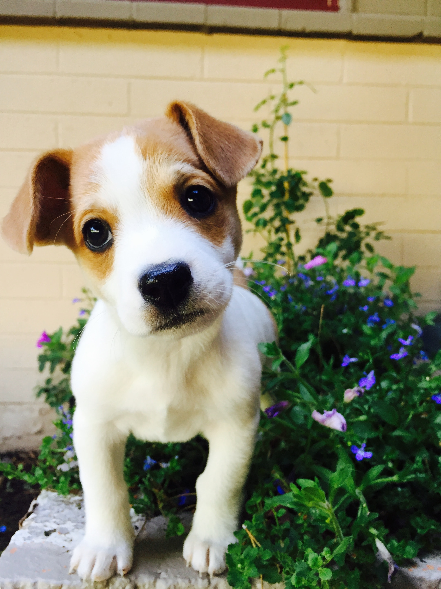

강아지의 종류는 많다. 말티즈, 웰시코기, 비글 등등..귀엽게 생긴 경우가 많다. 그러나 엄청나게 빨리 자란다. 생후 11개월 정도면 다 자란다. 소형견의 경우 약 10개월, 대형견은 1년 남짓 정도 걸린다. 보통 생후 2개월의 나이에 데려오게 되는데, 처음 데려왔을 때의 귀여움은 거의 한 달도 지속되지 않는다. 데려온 지 일주일만 지나도 체중이 늘고 몸이 큰 게 느껴지며 한 달이 지나면 외모가 눈에 띄게 달라지기 시작한다. 잠이 많다. 엄청나게 많이 잔다. 거의 하루 종일 잔다. 강아지 시절 너무 귀여워서 이뻐해 주고 싶지만 거의 하루 종일 잠만 자기 때문에 실제로 귀여워해 줄 시간이 별로 없다.
귀여운 모습을 보고 싶다고 자고 있는 강아지를 깨우는 만행은 절대 저지르지 말자. 사람도 그렇지만 자고 있는데 깨우면 엄청나게 스트레스를 받으며, 나중에 더러운 성격을 가진 개로 자라게 된다. 그리고 성장기인데 잠을 충분히 못자게 하면 성격 뿐만아니라 육체적으로도 좋지 않다. 사람도 잠을 자는 동안 몸이 더 잘 만들어지는데, 근력운동하는 사람들이 운동, 식사 외에도 수면을 강조하는 이유가 여기에 있다. 같은 원리로 갓난아기를 보면 먹고 자고 배고프면 깨서 또 먹고 자기를 반복하는데 먹은 걸 가지고 자는 동안 열심히 자라는 중이다. 마찬가지로 강아지도 밥 먹은 걸로 자는 동안 열심히 크는 중이니 잘 자게 둬야 건강하게 큰다.